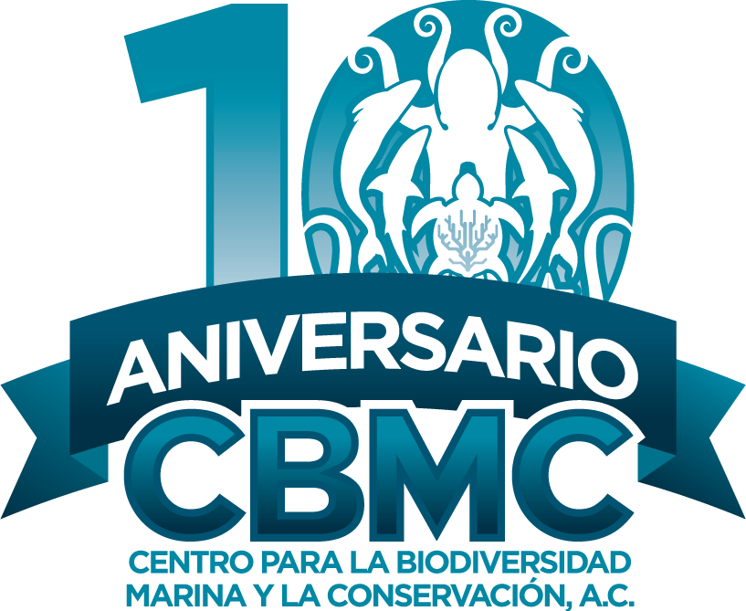

Thanks to the Patrick J. McGovern accelerator grant support, we gathered a complete fishery and climate dataset in Mexico. The accelerator grant was critical in putting together the computational infrastructure and the expertise within our organization to analyze all the data. Our Data Lab of the Centro para la Biodiversidad Marina y la Conservación, A.C. (CBMC) analyzed large-scale environmental patterns in the Mexican Pacific and the potential effects climate change has on the industrial fishery. Mainly how the industrial fishery reacted to extreme Marine Heatwaves (MHWs) in the Eastern Pacific, which were reported to be particularly intense.
We were able to reinvent our data pipeline using Amazon Web Services, enhance our computational capabilities, and test Machine Learning (ML) methods applied in a novel way to fisheries. We present our insights on this webpage, which is intended as a dynamic way to showcase results. We will maintain and update this page along with the results of our analysis in the future. The structure of this website is the following:
As a result of our analyses, we advanced our understanding of fishery and climate change, and these were the major insights obtained:
Sea Surface Temperature changed significantly over time, and strong MHWs events occurred more frequently in the area.
The Southern California Current is creating a buffer in front of the Baja California Peninsula, which could represent a key refuge area for species and the last standing pillar of marine productivity in the Mexican Pacific.
Summer in the Mexican Pacific arrives two weeks earlier and ends two weeks later than the historical average.
The catches of the fishing industry operating in the area were significantly affected, with a reduction of 22% [95%CI: -50%, -6%] in average Catch per Unit of Effort (CPUE) during the MHWs event and an overall decreasing trend of 80.7 total CPUE each year in total.
The fishing industry is spatially highly adaptable and is shifting towards high seas and more profitable waters to maintain catches.
Our Machine Learning model predicts that a decrease of 0.55 CPUE per year up to 2030.
This data will be critical in monitoring the effects of climate change on the fishing industry; however, large computational capabilities are essential to generate space and time-explicit models to depict a complete picture of the complexity of climate change and industrial fishery. The industrial fishery is modern and highly adaptable, so it can counteract climate change effects by changing fishing areas. However, such displacement has ecological consequences. It might be detrimental to fishery sustainability in the long term as the maintenance of the catch, and the absence of a collapse might be caused to an increase in space use, not to the resilience of the natural system. Fishery management must consider this for a policy if sustainable fisheries are a genuine objective.
Our analysis also underlines the importance of geospatial data like VMS for fishery assessments. We hope more researchers will use our package to download and analyze data to provide further insights.
